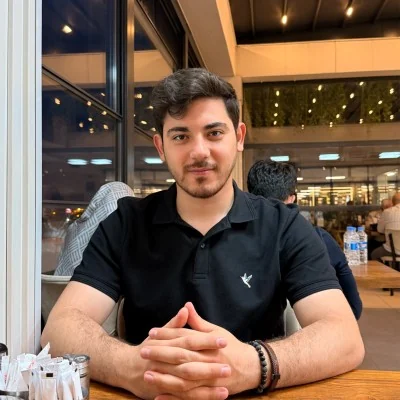

Watchly: What To Watch
Ne izleneceğine karar vermeyi kolaylaştıran, arkadaşlarla ortak izleme listesi tutulabilen bir film ve dizi uygulaması. Tek başıma geliştirdim; 8 dili destekliyor ve 240'tan fazla kayıtlı kullanıcısı var.
Bilgisayar Mühendisliği · İnönü Üniversitesi
Kotlin ve Jetpack Compose ile Android uygulamaları, işletmeler için web siteleri ve yönetim panelleri, donanım tarafında da mikrodenetleyicilerle otonom sistemler geliştiriyorum.
Google Play'de yayında olan bir film ve dizi uygulamam var; yerel işletmeler için canlıda kullanılan QR menüler ve web arayüzleri teslim ettim. Gömülü tarafta ise sensör verileriyle karar veren mikrodenetleyici tabanlı projeler üzerinde çalışıyorum.
Staj ve freelance işlere açığım
Looking for the English resume (CV)? Switch the site language to English (EN).

Mimarisini, teknik kararlarını ve sonuçlarını detaylı anlattığım dört çalışma.
Ne izleneceğine karar vermeyi kolaylaştıran, arkadaşlarla ortak izleme listesi tutulabilen bir film ve dizi uygulaması. Tek başıma geliştirdim; 8 dili destekliyor ve 240'tan fazla kayıtlı kullanıcısı var.
Toprağa ve havaya bakıp sadece gerektiği kadar sulayan bir sistem. Bu fikirle, Robotistan'ın 100 proje seçtiği programa kabul edildik.

Kampüsün 3B dijital ikizi. Binaları harita üzerinde gezip kampüsün giderlerini ve sürdürülebilirlik verilerini inceleyebilirsiniz.

Bir kafe için web sitesi, masalara QR menü ve işletmenin fiyatları telefondan güncelleyebildiği bir yönetim paneli. Menüde 127 ürün var.
Bunların dışında 6 proje daha var: iki işletme sitesi, bir Android asistan, bir masaüstü stok uygulaması, bir yangın söndürme robotu ve ilk Android uygulamam. Hepsinin kendi detay sayfası var.
Tüm projeler (10)2024'te İnönü Üniversitesi'nde bilgisayar mühendisliğine başladım. İlk Android uygulamam IZeka'yı Kotlin ve XML'i öğrenirken yaptım. Çocuklar için bir eğitim oyunuydu; seslerinden çizimlerine kadar her şeyini kendim hazırladım.
Sonra Watchly'yi Google Play'e çıkardım ve işletmeler için web siteleri, yönetim panelleri yapmaya başladım. Bu işleri Tardus Studio adıyla yapıyorum.
Yazılımın yanında donanım tarafı da ilgimi çekiyor. Arduino ile engellerden kaçıp alevi bulan ve söndüren bir robot yaptım. Şimdi de Robotistan'ın UNO Q programında sulama sistemi üzerinde çalışıyoruz.
En çok Kotlin ve Jetpack Compose ile Android tarafında çalıştım. Arka uçta da genelde Firebase kullanıyorum.
YÖK destekli 3B Kampüs İkizi projemiz COP31 İklim Zirvesi'nde sunulmaya hak kazandı. Patent başvurusu hazırlanıyor.
Otonom sulama projemizle, 100 projenin seçildiği programa kabul edildik.
Watchly'yi Google Play'de yayınladım. Dolunay Cafe, Sağlam Su ve Alperen Makina için web siteleri ve yönetim panelleri yaptım.
İnönü Üniversitesi'nin teknoloji festivalinde takımımın kaptanıydım.
Üniversite öğrencilerine yönelik araştırma destek programındaki projemizin teknik geliştirme kısmını yürüttüm.
Lisans, devam ediyor.
En hızlı dönüşü e-posta üzerinden yapıyorum. LinkedIn üzerinden de ulaşabilirsiniz.
yunuscarcur27@gmail.comLooking for the English resume (CV)? Switch the site language to English (EN).